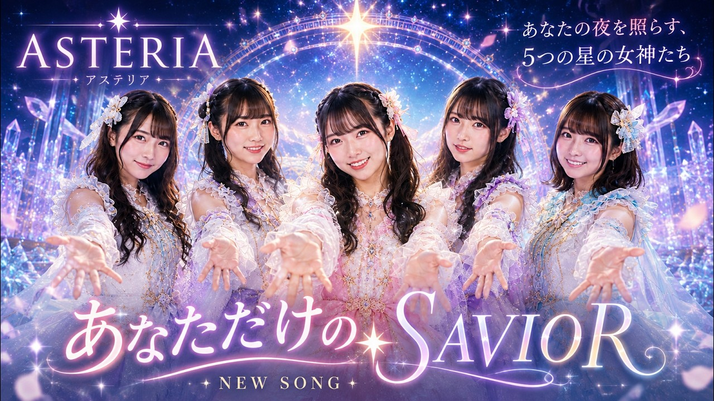
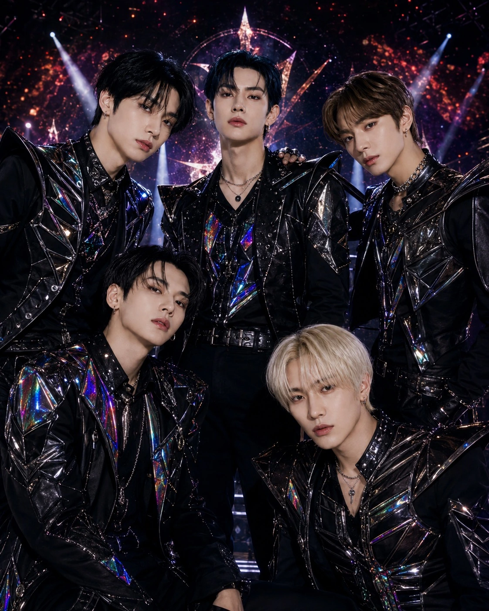
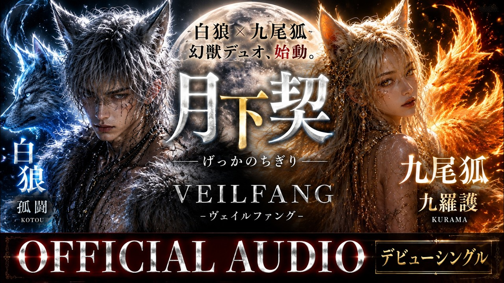

朝霧しのぶ
家族、記憶、人生の別れとぬくもりに寄り添う、日本の原風景。
演歌と歌謡曲を軸に、人生の機微を落ち着いた語りと旋律で届ける。アーティストページGATE EXPERIENCE
正式な重低音Ver.2が未登録です。扉は無音で開きます。SUZUKA MUSIC UNIVERSE
AI音楽プロジェクトSUZUKAの世界観、相関図、年表、物語。
異なる世界観を持つAIアーティストと作品が、音楽を通してひとつの宇宙を形づくる。
SUZUKAは、AIを制作支援に活用し、榎本魅愛、妃みちる、神代煌牙をはじめとする架空のAIアーティストのオリジナル楽曲、Music Video、ストリーミング作品、物語を発信する音楽プロジェクトです。
WORLD TIMELINE
RELATIONSHIP
同じSUZUKA世界で、恋愛・誓い・闇・祝祭・記憶・再生の物語が互いに響き合います。
作品はジャンルとテーマを接点に結ばれ、各アーティストの領域を横断します。
STORY
家族、記憶、人生の別れとぬくもりに寄り添う、日本の原風景。
演歌と歌謡曲を軸に、人生の機微を落ち着いた語りと旋律で届ける。アーティストページ
暗闇さえ星に変え、涙を光にする5つの星の女神たち。
希望と寄り添いを届けるJ-POP・アイドルポップ。アーティストページ
光と闇が交わる近未来で、5つの運命がコードを書き換えていく。
ダークK-POP、EDM、Trapを基調に、ボーカル、ラップ、ダンスの緊張感を重ねる。アーティストページ
恋する瞬間のときめき、迷い、勇気を、色彩豊かな物語として歌う。
J-POP、ロマンティックポップ、バラードを軸に、日常の感情をまっすぐなメロディへ変える。アーティストページ
大切な人を守る黒の騎士。静けさの奥にある誓いと、消えない記憶を描く。
シネマティックJ-POP、ロック、ダークポップを融合した重厚な物語音楽。アーティストページ過去の大切な人への感謝と、今の幸せを見つめる物語。
最新曲「世代を超えてママへ」をはじめ、人生、家族、恋や友情の物語を届ける。アーティストページ
人間の本能、社会の矛盾、夜の奥に潜む衝動を、黒い寓話として描く。
V系、ダークロックを中心に、挑発的な問いと物語性を強いバンドサウンドへ刻む。アーティストページ
インドと日本、地上と宇宙を鮮やかな色彩で結ぶ祝祭の世界。
インド音楽の情熱とJ-POPの親しみやすいメロディを融合したダンスポップ。アーティストページ
傷ついた心に光を戻し、もう一度立ち上がる瞬間を仲間と分かち合う。
応援、回復、再生をテーマにしたJ-POPとアイドルポップ。アーティストページ
白狼と九尾狐が、月の下で契りと運命を結ぶダークファンタジー。
美麗さ、神秘性、ワイルドさを重ねた物語性の高いJ-POP。アーティストページファンタジー世界のドワーフをモチーフに、日本の職人、鉄、鍛冶、酒、義理、人情を感じさせる世界観。
音楽性・楽曲情報は確認後に掲載します。アーティストページ美しく、危うくて、どこまでもロック。
Hard Rock / Alternative Rock / Rock Balladアーティストページ


新アーティスト、新作品、物語連携、イベント